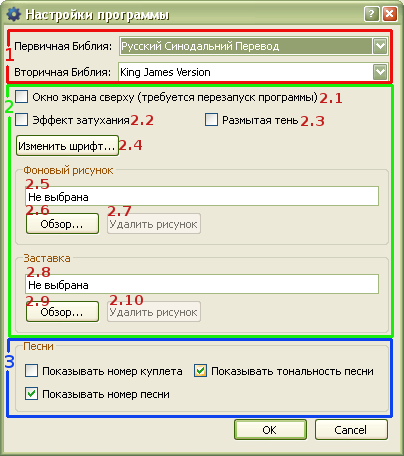

5.1 Настройки программы

1. Настройки для Библий:
Эти настройки влияют только на работу с Библиями. Подробнее —
здесь.
2. Общие настройки:
Эти настройки влияют на работу всей программы.
-
- При активизации, окно экрана будет всегда находится поверх других окон. Окна всех других программ будут расположены под окном экрана Софт Проектора. Если проектор используется программой PowerPoint или другой программой, оставьте эту опцию не активизированной. Для того чтобы данная опция вступила в силу, требуется перезапуск Софт Проектора.
- При активизации, переход от слайда к слайду будет плавным, в противоположность моментальному.
- Создается тень под текстом, для более легкого чтения при светлом тоне фонового рисунка.
- Подборка шрифта, его размера и стиля для подаваемого на экран текста.
- Выбирается фоновый рисунок помещаемый под текстом. В окошке находится путь к файлу рисунка (не редактируемый вручную).
- Обзор и выбор фонового рисунка.
- Удаляется фоновый рисунок и возвращается черный фон экрана.
- Заставка показывается на экране при отсутсвии текста. Она также появляется при нажатии на кнопку "Скрыть".
- Обзор и выбор заставки.
- Удаляется заставка и возвращается черный фон экрана.
3. Настройки для песен:
Эти настройки влияют только на работу с песнями. Подробнее — здесь.